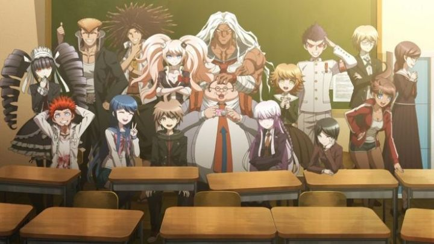

Disclaimer: This is a review of "Danganronpa - The Animation," a 2013 anime adaptation of the game "Danganronpa - Trigger Happy Havoc." I have not played the original game at the time of this writing, and cannot comment on similarities or differences. Spoilers will be avoided.Against all odds, the "Danganronpa" video game series has become something of a cult franchise, perhaps one of NIS's biggest properties outside of "Disgaea." It originally released for the PSP, at a time when these original stylish murder mystery games were popular on both PSP and the Nintendo DS. The eventual anime adaption, I believe, further helped with the slow growth of the game's audience, and the anime's original story in 2016 made it important in its own right. But today, I'm just talking about the 2013 anime, "Danganronpa - The Animation," which I believe is a straightforward adaptation of the original game, and not its sequels (I haven't played the games yet, so forgive me for my ignorance). "Danganronpa" is memorable for being quirky, taking ultra-violence to a new level in the murder-mystery game, while packaging everything in a somewhat family-friendly format. Also for a bizarrely eccentric cast of characters. Set in a fictional elite prep-school, 15 students wake up alone in the classrooms, and are told by their principal (an animatronic black and white teddy bear) that they are locked in, not allowed to leave the school. To leave this prison and reconnect to the outside world, a student must kill another, and get away with it; each murder is followed by an investigation and a trial where the other students try to figure out the culprit. If they correctly convict the murderer, then the one student is executed, and the game repeats. If the murderer gets away with it, the rest of the class is executed, and the one student gets to leave. Of course, these are all teenagers, and would never sink so low as to kill each other... or would they?When we talk about murder in "Danganronpa," we mean it. The kids are murdered through stabbing, poison, or blut trauma to the head. The "execution" sequences are hyper-stylized short films, animated with 3D compositing like a nightmarish pop-up book. And the deaths are real: the body count keeps climbing, and these kids are dead for good. Whether it was for censorship reasons or a stylistic choice, the blood is always pink in the show instead of red, but it's still gruesome notheless. Not as much as a violent action anime, but still more than one might expect from what feels like a children's detective show. And why test these children? Monokuma, the bear principal, is frank and claims he "gets off" on the killing and the drama, or more generally, the overwhelming feeling of despair the children go through. There is a larger overarching mystery regarding the purpose of the school and who's running it, which slowly gets hinted at. The murders (approximately one for every two episodes) and this promise of an answer keeps the show engaging. However, the extra-long final episode is a little disappointing, with a explanation and twist that's so farfetched that I didn't believe it, all told through exposition in a way where it'd be easy to miss some of the rapid-fire details.  Also a little distracting, for better or for worse, are the characters. Makoto Naegi is the protagonist, a trusting but logical boy. The others vary wildly: there's an overdressed detective type, and gothic lollita gambler with a frilly dress, a massively overweight geek, a girl that looks like a 300-pound bodybuilder man in a girl's uniform, and many more, each more bizarre than the next. It's like they took the ugliest, strangest looking characters from shows like "One Piece" and "Naruto," and plopped them into this medium-sized cast. When someone is exposed to be a killer, they also tend to get wild eyes, and sometimes extrude a foot-long wagging tongue to show how crazy they are. Perhaps the adapted style here isn't as severe as the original game, but it's still weird. So the visual design is a little all over the place: sometimes it's excellent, sometimes it's crazy for the sake of it. This partially hides the poor quality of the animation, which uses limited movement and mostly static characters (even though the 3D compositing is used to good effect here). Briefly, I'll mention the limited use of fanservice: one character's a tan swimmer, and the show frequently teases her swiming in a suit but never delivers. Another female character has a larger bust from her shirt, and the camera focuses a lot on it at one point for no particular reason. I couldn't tell if the show was trying to attract a perverted audience, or was making fun of them. The opening rap theme song is killer, and the rest of the background score is good enough. Funimation's English cast is decent, if somewhat standard, but extra credit should be given to characters that have multiple personalities (Is that a spoiler? Maybe?). Even though the ending was a bit off for me, I enjoyed the ride in "Danganronpa - The Animation" a lot more than I thought I would. There's a frequent series of murders to make this an effective mystery-thriller. and I certainly couldn't predict what would happen next. It's a great entry to convince someone to play the games. And while it's possible this show spoils the first game, there's enough questions for me to be excited to play the sequels, and to even watch the anime sequels that came after. Never mind hope or despair... this show is just entertainingly interesting.
- "Ani" More reviews can be found at : https://2danicritic.github.io/ Previous review: review_Dance_in_the_Vampire_Bund Next review: review_Dante's_Inferno_-_An_Animated_Epic